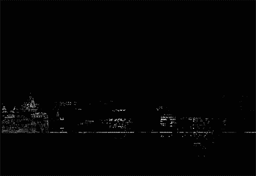
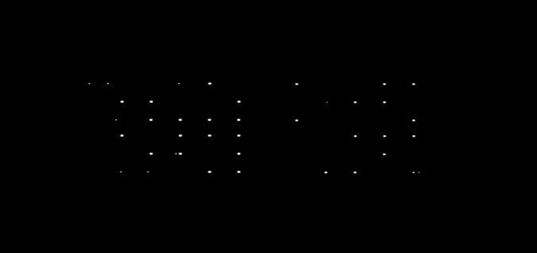
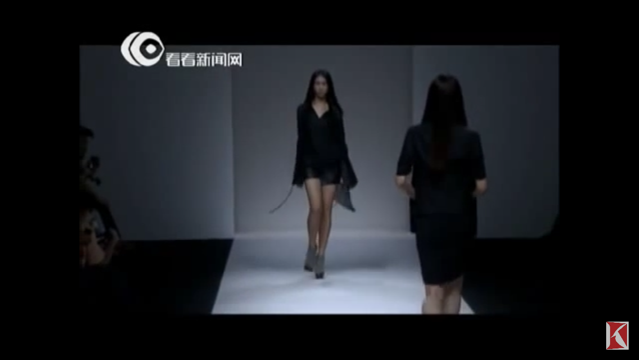
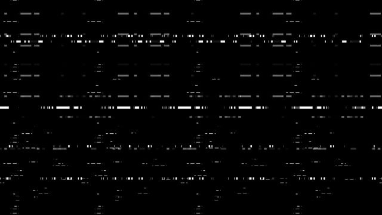

0. intra

I.
И вот оно...
Полуночная безысходность.
Странная чарующая пустота ночи. В меру прохладный лёгкий ветер, бесцельно и безнадежно плутающий по безлюдной местности.
Забытый миром маленький дом, среди пустоты вселенной.
Тонкие тёмные ветви, печально склонившиеся над ним, будто укрывали и оберегали его от неизвестности будущего.
Тьма и пустота одиночества...
В холодной колыбели сумрак покой и тишина. И не было уже в этой пустоте ни тоски ни волнующей тревоги.
Наоборот, она состояла из чего-то невидимого и неосязаемого. И без всего этого ночь не могла быть ночью.
Неизвестно, ожидало ли хоть какое-то будущее эту печальную местность, или она навсегда застряла где-то в переходе между старым и новым миром.
И летит в чёрной бездне бесконечной вселенной без каких либо опознавательных знаков и надежды на что-то. На что-то главное, важное и так необходимое.
В почти пустом доме горел холодный белый свет.
И вновь вечер, ничего практически не предвещающий и не предполагающий никакой новизны.
Лёгкий холод и едва ощутимая дрожь где-то внутри. Пустота и отчаянье.
Иногда приходит непоколебимая уверенность будто всё, что ты делал, к чему стремился в жизни, всё напрасно.
В такие минуты иногда спрашиваешь себя: А что если ты здесь только для того чтобы страдать?
Всё существование затеяло всё это только с одной такой целью.
И при этом пытаешься вспомнить хоть что-то хорошее и доброе, что когда-то случалось.
Но потом понимаешь, что всё это безвозвратно ушло и будет ли ещё хоть что-подобное?
24. Ночная атака
I.
Предчувствие... Ты знаешь, что кто-то есть, но никого не видно...
Перекодировка пространства.
Сделав ещё несколько поворотов в лабиринтах здания, мы пришли в офис Вирджинии.
Вирджиния подошла к терминальным мониторам и стала всматриваться в бегущие цифры и ежесекундно меняющиеся диаграммы.
- Что происходит? -спросил я её.
- Изменяются матричные коды.
Ты привык видеть то, что является причиной того или иного события. Здесь же всё иначе…
Если пространство – лишь созданная трёхмерная голограмма, то достаточно внести изменения в коде, и всё начинает распадаться.
Структуры Maud пытаются остановить атаку.
Ruth взволнованно работала с компьютером.
- Мы сейчас поедем в кампус к Maud. Насколько мне известно, Miut уже должна быть с ней.
Чтобы выйти в иную сферу необходимо потерять связь с данным пространством. С этой целью Ruth достроила голограмму высотки неподалеку от кампуса.
Если говорить вашим языком она теперь уходит в стратосферу.
- Неужели этого будет достаточно?
- Мы надеялись, но нет. Поэтому спроектировали специальный модуль, который будет подниматься вверх, пока не исчезнет резонанс с магнитной сеткой пространства.
- А что потом?
- Потом подойдут координаторы кольца и переведут тебя в другое пространство. Miut отправится к своей цивилизации,
она набрала достаточно опыта пребывания в этой мерности. Раньше они могли бы забрать её непосредственно отсюда,
но из-за катаклизмов нашего измерения это стала почти невозможно и даже опасно. Поэтому у нас нет другого выбора, кроме как отправить её с тобой.
- А как же ты?
- Мы с Maud останемся здесь. Точнее мы будем в специальном лепестке пространства, где с нами ничего не будет.
- Не представляю, как я буду без тебя
- Не переживай, это временно. Когда всё закончится, я снова буду с тобой. Со мной ничего не случится.
- А что будет с Ruth?
- Она будет на время переведена в состояние неактива Мы вернём её, я надеюсь, уже в новое пространство.
II.
Увидеть сквозь время и расстояние Как окружает всё тёмная…
Ruth работала с терминалом. На чёрном экране монитора бежали бесконечные розово-алые строки с информацией о процессах.
-Я сейчас переведу пространство в аварийное состояние. Не пугайся
Свет в офисе ненадолго погас. Спустя несколько секунд загорелся тусклый красный свет.
Я подошёл к окну: как оказалось свет выключился не только в офисном здании, но и во всём городе.
-Некоторое время мы будем находиться в аварийном режиме- промолвила Ruth, не отводя глаз от монитора.
-Всё готово чтобы отправиться к точке перехода:: Ruth
-Отлично. Пойдёмте к лифту:: Virginia
На уровне 200 этажа будет капсула, не зависящая от гравитации и от чего бы то ни было ещё.
#коридоры..комнаты..
#Поле всех возможностей
Точка-бесконечность.
25. Interrupt

I.
- Сейчас будут выключены основные активы энергополя пространства. :: Ruth
- Что это значит? – спросил я
- Будут большие искажения в наблюдаемой матрице
- Это значит могут исчезать стены, здания, сохраняй спокойствие. :: Вирджиния.
- Ничего не получилось? – спросил я.
- Нет, получилось, но пока не полностью. Нужна будет более тотальная перезагрузка.
II.
Они тебя зовут. Хотят переговорить именно с тобой
Ruth, открывай портал, мы входим::v
-Я сейчас разверну координатное пространство. ::ruth. Будет видна только голографическая разметка.
Все другие необходимые объекты будем добавлять по мере необходимости.
В чёрной пустоте проявилась тонкая координатная дорога. Тут из тёмного портала одна за другой вышли три женщины.
Они были одеты в чёрный и выглядели практически одинаково за исключением силуэта из тонких белых линий на груди.
-Они хотят, чтоб ты прошёл с ними::r
-Думаю нет в этом ничего страшного, если что-то пойдёт не так, Ruth закроет портал и вернёт тебя через защитный туннель.
Я проследовал за ними. Небольшой зал со стенами из чёрного стекла возвышался над координатной плоскостью.
У дальней стены стояла женщина, при этом не было сомнений, что это кто-то из них. Но кто Iwii или iiya, сказать было сложно.
Уж слишком они похожи, да и освещение было лишь от координатной сетки.
Тут в верхних углах комнаты плавно включились бледные холодные лампочки с чуть розово-алым оттенком в излучаемом свете. Передо мной стояла iiya.
-Напрасно они так волнуются, ведь абсолютно нечего опасаться. :: i
undefined__ восприятие всего..
В мире куда мы пойдём ничего нет. Но благодаря тому может проявиться всё что захочешь.
Пустота – поле всего возможного.
Помнишь трёх дам что встречали тебя? ::iy:: это всё я.
В исчезновении нет ничего страшного, ведь исчезает всё ложное. Не может исчезнуть то чего не существует в реальности.
Как может исчезнуть пустота?
-Ты хочешь показать свой мир?
-Да, неужели тебе самому не интересно увидеть нечто совершенно иное? :: iy
-Как мы будем перемещаться в этом пространстве?
Рядом из ниоткуда появилось нечто размером с машину, но представляло собой пирамидальное образование из чёрного стекла.
Одна и граней открылась и появился проход внутрь
-Входи ::iy
Пустоту не убить, у неё ничего не отнять..
Нечто стремительно неслось в пространстве над координатной сеткой.
Впереди показалось очень высокое тонкое здание. При подлёте ближе к нему стало видно что оно не смотря на узкий фасад,
также вытянуто вглубь, по оси z.
- Хорошо когда среды бескрайней пустоты есть уголок уюта. :: iy
Забытый проект
-Ты знаешь где находится пространство, откуда приходит Ivvie?
-Нет. Я даже не уверена в том, существует ли оно. :: iy
26. Total reload

I.
Мы перешли в здание, где можно было переждать процесс перезагрузки пространства.
Здание не имело ни окон ни каких либо опознавательных знаков. Стены были как будто из цельного чёрного стекла.
Чёрный дом мироздания.
- Это помещение полностью защищено от катаклизмов пространства. Что бы не происходило с матрицей, если мы находимся внутри, нам ничего не угрожает.
Внутри так же имеется необходимое оборудование для управление матричными полями.
В помещении горел тусклый красно-розовый аварийный свет.
Было удивительно смотреть сквозь чёрные стекла здания и осознавать что за ними пустота и ничего нет.
Нет никакой матрицы людей домов чего бы то ни было ещё.
- В принципе можно на всякий случай спуститься в помещение -1-го уровня, но, похоже, в этом нет необходимости.
А также можно перемещаться в соседние здания по высотным переходам.
27. Трансцендентальный переход.

I.
Мы вышли за границы измерения.
- Удивительно! Невообразимая мерцающая мембрана. Переливы розового света из чёрной пустоты.
Как электрические разряды. Нет никакой голубой планеты, никакого бескрайнего космоса и прочей ерунды. Просто потрясающе!
Импульс проникновения
II.

Иное пространство где длинные тонкие здания висели в пустоте без какой-либо точки опоры.
Даже если темно, было всё отчётливо видно.
#Мы приблизились к одному из них. В вершине открылся ангар и мы плавно влетели туда.
28. Параллельное измерение
I.
И времени больше не будет…
Нулевое
Иные: энергетические формы жизни
Потому что
Когда эта жестокая холодная реальность приближается к нам, нам нужен друг.
Пустая, бесконечная…
Не только они единая формация, каждая из нас тоже одно.
Давай сегодня покажу как проявляется первоначальный импульс, тончайший чертёж нового измерения.
29. Branda

I.
- Понимаешь, всё что существует здесь: город, этот мир. Это всё её творение. Вирджиния создала это пространство.
Это её идеал, который создан так же и для тебя.
- Она хочет вывести пространство на совершенно новый уровень. Перевести в максимальную мерность для такого построения структур.
Чтобы оно существовало как проявленная объективная реальность, но имело кодировку высших сфер.
- Почему же ты ушла?
- Потому что надоело всё. Вся иллюзорность, выдуманные миры. Эти здания, реки, горы и другие формы. Хотелось истины, какой бы она не была.
- Ты довольна увиденным.
- Конечно. Более чем. Всё оказалось даже лучше, чем я могла себе представить.
- Надоело жить во лжи. Всё это чьё-то миротворение. Почему лучше именно так? Такая природа, светила, сценарии… Бред! Надоело играть в эти игры.